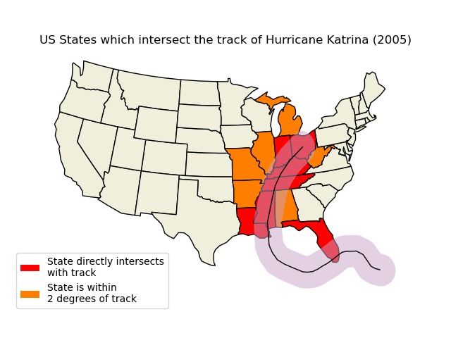

Note
Click here to download the full example code
Hurricane Katrina¶
This example uses the power of Shapely to illustrate states that are likely to have been significantly impacted by Hurricane Katrina.
Out:
/root/project/lib/cartopy/io/__init__.py:241: DownloadWarning: Downloading: https://naturalearth.s3.amazonaws.com/110m_cultural/ne_110m_admin_1_states_provinces_lakes.zip
warnings.warn(f'Downloading: {url}', DownloadWarning)
import matplotlib.patches as mpatches
import matplotlib.pyplot as plt
import shapely.geometry as sgeom
import cartopy.crs as ccrs
import cartopy.io.shapereader as shpreader
def sample_data():
"""
Return a list of latitudes and a list of longitudes (lons, lats)
for Hurricane Katrina (2005).
The data was originally sourced from the HURDAT2 dataset from AOML/NOAA:
https://www.aoml.noaa.gov/hrd/hurdat/newhurdat-all.html on 14th Dec 2012.
"""
lons = [-75.1, -75.7, -76.2, -76.5, -76.9, -77.7, -78.4, -79.0,
-79.6, -80.1, -80.3, -81.3, -82.0, -82.6, -83.3, -84.0,
-84.7, -85.3, -85.9, -86.7, -87.7, -88.6, -89.2, -89.6,
-89.6, -89.6, -89.6, -89.6, -89.1, -88.6, -88.0, -87.0,
-85.3, -82.9]
lats = [23.1, 23.4, 23.8, 24.5, 25.4, 26.0, 26.1, 26.2, 26.2, 26.0,
25.9, 25.4, 25.1, 24.9, 24.6, 24.4, 24.4, 24.5, 24.8, 25.2,
25.7, 26.3, 27.2, 28.2, 29.3, 29.5, 30.2, 31.1, 32.6, 34.1,
35.6, 37.0, 38.6, 40.1]
return lons, lats
def main():
fig = plt.figure()
# to get the effect of having just the states without a map "background"
# turn off the background patch and axes frame
ax = fig.add_axes([0, 0, 1, 1], projection=ccrs.LambertConformal(),
frameon=False)
ax.patch.set_visible(False)
ax.set_extent([-125, -66.5, 20, 50], ccrs.Geodetic())
shapename = 'admin_1_states_provinces_lakes'
states_shp = shpreader.natural_earth(resolution='110m',
category='cultural', name=shapename)
lons, lats = sample_data()
ax.set_title('US States which intersect the track of '
'Hurricane Katrina (2005)')
# turn the lons and lats into a shapely LineString
track = sgeom.LineString(zip(lons, lats))
# buffer the linestring by two degrees (note: this is a non-physical
# distance)
track_buffer = track.buffer(2)
def colorize_state(geometry):
facecolor = (0.9375, 0.9375, 0.859375)
if geometry.intersects(track):
facecolor = 'red'
elif geometry.intersects(track_buffer):
facecolor = '#FF7E00'
return {'facecolor': facecolor, 'edgecolor': 'black'}
ax.add_geometries(
shpreader.Reader(states_shp).geometries(),
ccrs.PlateCarree(),
styler=colorize_state)
ax.add_geometries([track_buffer], ccrs.PlateCarree(),
facecolor='#C8A2C8', alpha=0.5)
ax.add_geometries([track], ccrs.PlateCarree(),
facecolor='none', edgecolor='k')
# make two proxy artists to add to a legend
direct_hit = mpatches.Rectangle((0, 0), 1, 1, facecolor="red")
within_2_deg = mpatches.Rectangle((0, 0), 1, 1, facecolor="#FF7E00")
labels = ['State directly intersects\nwith track',
'State is within \n2 degrees of track']
ax.legend([direct_hit, within_2_deg], labels,
loc='lower left', bbox_to_anchor=(0.025, -0.1), fancybox=True)
plt.show()
if __name__ == '__main__':
main()
Total running time of the script: ( 0 minutes 0.774 seconds)